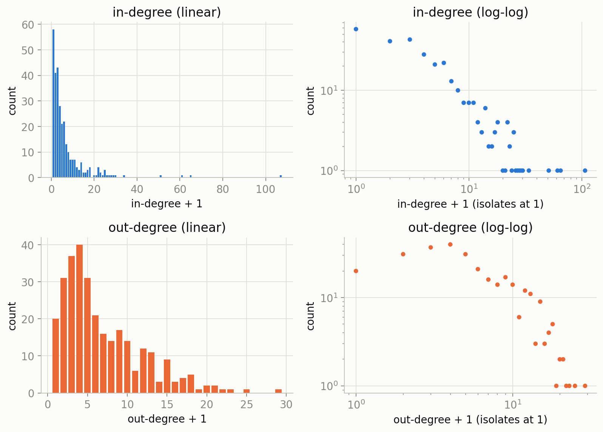
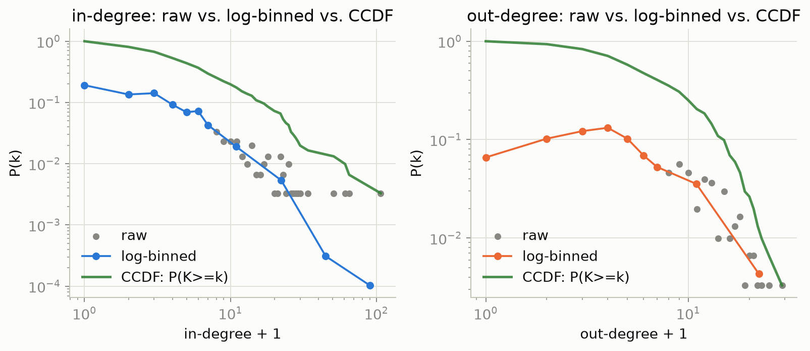
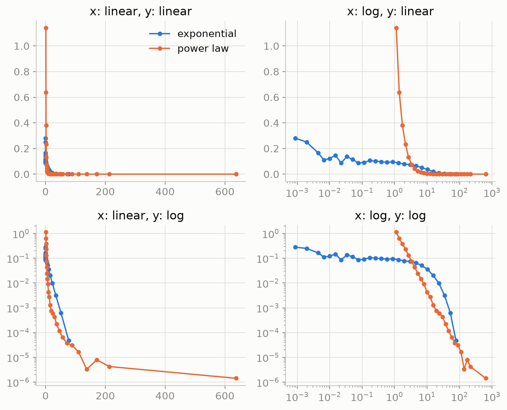
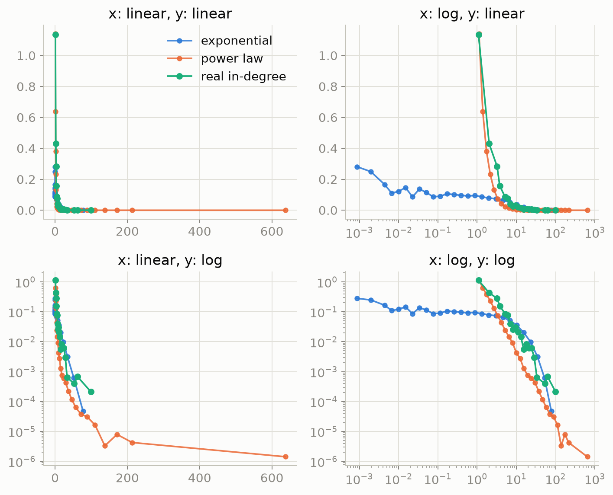

Interactive Network Explorer
303 character names is too many to show all at once without them piling on top of each other, so only the best-connected hubs are labeled by default. Hover or click any node to reveal its name (and its neighborhood on click), or zoom in to reveal labels more broadly. It opens arranged into the Marvel wordmark — cycle to a force-directed / grid / circle layout any time.
Loaded graph
Nodes: 0
Edges: 0
Density: 0.000
Exercise 1.6 — The Distribution, as Code
Rebuilding week 1's two explorables in code: reconciling directed vs. undirected edge counts, plotting the real degree distributions, log-binning them correctly, and checking what shape they resemble against synthetic exponential and power-law data. Full working notebook: analysis.ipynb. See also the extended write-ups on degree distributions and binning methods.
1. Directed vs. undirected — reconciling the two edge counts
Loading every node first keeps 17 isolated characters on the graph, giving 303 nodes and 1,784 directed edges. Collapsing reciprocal links into single undirected edges gives 1,434 edges and an average degree ⟨k⟩ ≈ 9.465.
2. In-degree and out-degree distributions
Plotted against k+1, not k — a log axis can't show zero, and 17 characters have no links at all in one or both directions.

| Character | k |
|---|---|
| Spider-Man | 106 |
| Hulk | 64 |
| Wolverine | 60 |
| Doctor Strange | 50 |
| Deadpool | 33 |
| Character | k |
|---|---|
| Betsy Braddock | 28 |
| Cloak and Dagger | 24 |
| Adam Warlock | 22 |
| Venom | 21 |
| She-Hulk | 20 |
3. Log-binning, done correctly for integer degrees
Standard log-spaced bin edges quietly assume degree is continuous — with integers, edges land between values and bins go empty. The fix: width-1 bins up to k+1 = 7, doubling bins after that ([8,16), [16,32), …), each count divided by its bin width, each bin drawn at the geometric mean of its first and last integer.

4. Exponential vs. power law — and where the real data sits
10,000 samples each from an exponential (scale 10) and a power law (α = 2.5, xmin = 1), viewed under all four axis-scale combinations.

Now the real in-degree distribution joins the same four panels:
